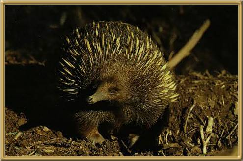

This little creature sleeps most of the day, and eats ants and termites. They can burrow down into the earth barely moving their bodies, and once burrowed are very difficult to dislodge. They hibernate through the winter and are found throughout Australia.
Photographer: Unknown